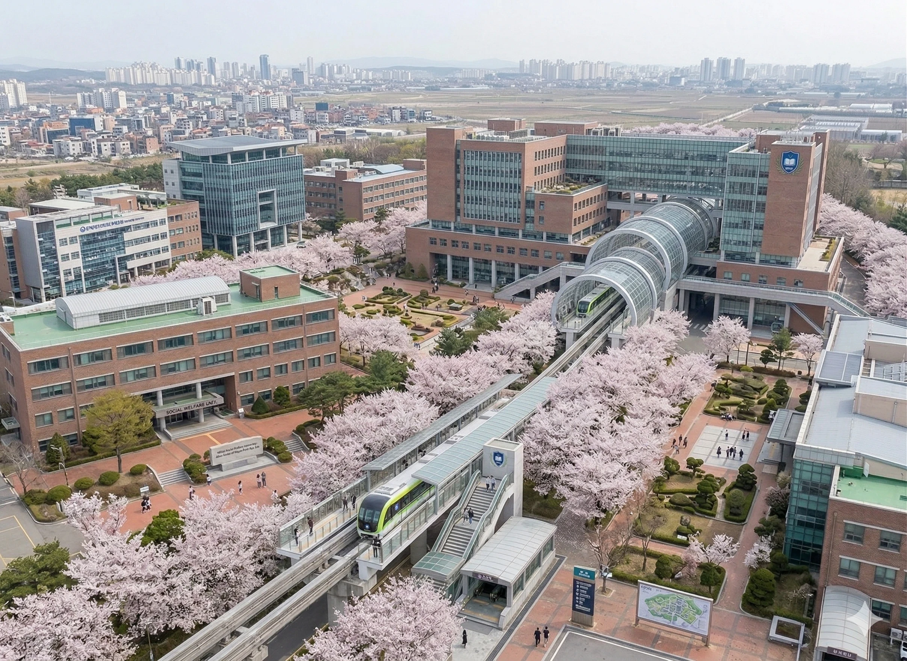
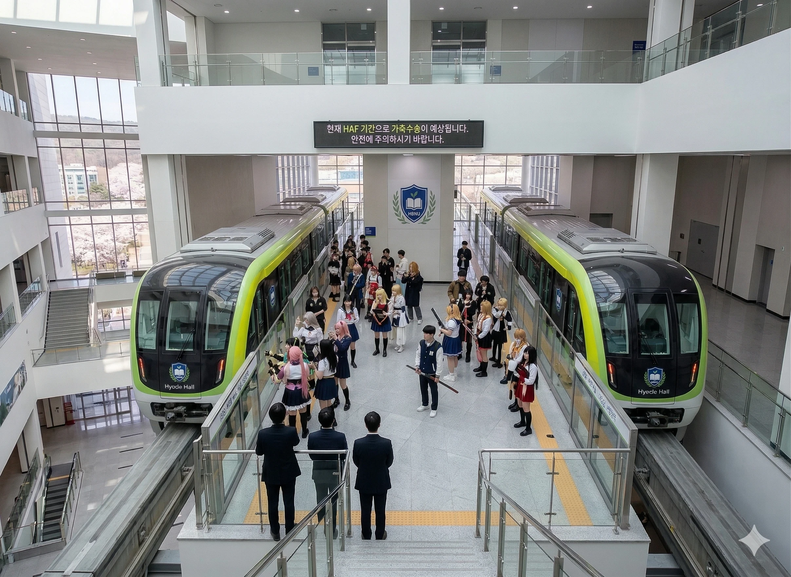
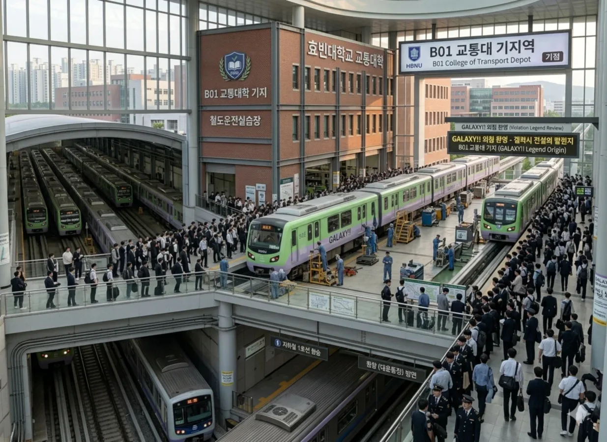
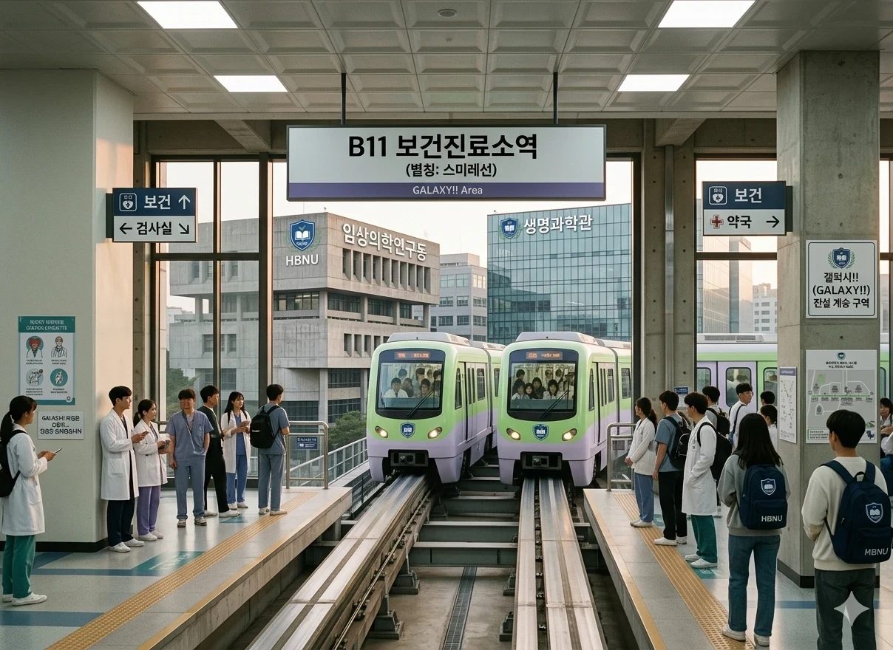

1. 개요
"캠퍼스의 하늘을 달리는 은하수."
"GALAXY!! 외침 환영 - 갤럭시 전설의 발원지" — B01 교통대학 기지역 공식 전광판 문구(...)

효빈대학교 당선(본)캠퍼스의 외곽과 북부 구역(인문·사회·예체능·자연대 및 기숙사 클러스터)을 공중으로 순환하는 모노레일 노선. 평지를 달리는 A선(트램)과 달리, 지상 10~15m 높이의 고가 궤도빔 위를 주행하며 광활한 캠퍼스 전경을 한눈에 조망할 수 있다.
주로 기숙사(북부)와 주요 단과대, 그리고 랜드마크인 베르데 홀을 연결하는 핵심 교통수단이다. 개통 초기에는 단순 셔틀용이었으나, HAF 기간이나 입시철, 그리고 평일 오전 9시 1교시 직전에는 수송량이 폭발하여 전광판에 공식적으로 '가축수송' 경보가 발령되기도 한다.
이 노선 역시 A선과 마찬가지로 교통대학 학생들의 운전, 관제 및 중정비 실습용으로 활용된다. 차량기지와 종합실습장이 결합된 B01역(교통대학 기지역)과 인접한 S-35-4 모노레일 정비센터에서는 제복과 안전모를 착용한 학부생들이 직접 모노레일 대차와 구동 모터를 분해·조립하는 진풍경을 매일 볼 수 있다.
2. 노선 정보

현재 9시 수업 전 가축수송 중. 혼잡하니 얀전에 유의바랍니다.라는 살벌한(그리고 오타 난) 공지가 떠 있다.
| 역 번호 | 역 명칭 | 주요 접근 시설 | 비고 |
|---|---|---|---|
| B01 | 교통대학 기지 | 교통대학, 철도운전실습장 | 기점. 일반 학생보단 제복 입은 실습생이 더 많다. 갤럭시 전설의 발원지. |
| B02 | 중앙도서관 | 중앙도서관, 박물관 | 시험 기간에 24시간 운영(심야 셔틀 대체). |
| B03 | 사회복지대 | 사회복지학대학, 소조역 | 박효빈 시장의 모교. 소조역과 지하철 출구로 연결됨. 벚꽃 명소. |
| B04 | 미술사회대 | 미대, 음대, 디자인대 | 화구통과 악기를 든 학생들이 탄다. |
| B05 | 법전원 | 법학전문대학원 | 정숙을 요하는 구간. |
| B06 | 효빈대중앙환승장 | 효빈대중앙환승장 | 트램 A선 환승 가능. (중간 경유) |
| B07 | 예술대 | 예술대, S-35-4 모노레일 정비센터 | 역 바로 옆에 B선 공중 차량기지(정비센터)가 붙어 있다. |
| B08 | 자연대 | 자연대 | |
| B09 | 베르데홀 | 대강당, 당선역 | HAF 기간에는 코스어들로 가득 차는 역. 건물 내부 직결. |
| B10 | 북부 기숙사 | 학생생활관(기숙사) | 기숙사생들의 생명줄. 아침 9시 수업 전엔 전쟁터다. |
| B11 | 보건진료소 | 보건진료소, 임상의학연구동, 생명과학관, 희다관 등 | 역명판에 공식적으로 (별칭: 스미레선) / GALAXY!! Area가 적혀 있다. |
| B12 | 대운동장 | 대운동장, 선샤인 노천극장 | 축제 메인 스테이지 접근역. |
| B13 | 본부. 충승당 | 대학본부, 효빈대역 | 트램 A선 환승 가능. 전광판에 (SMYRE LINE)이 떠 있다. |
| B14 | 상과대 학생회관 | 학생회관, 상과대학 | 트램 A선 환승 가능. |
| B15 | 효빈대중앙환승장 | 효빈대중앙환승장 | 트램 A선 환승 가능. 종점. |
3. 특징
- 캠퍼스 스카이라인: 모노레일 특성상 고가로 운행되어 캠퍼스 전경이 한눈에 내려다보인다. 벚꽃 시즌에는 B03(사회복지대)~B05(법전원) 구간이 절경이다. 특히 B03역 북쪽은 사회복지학대학 건물 브릿지 하단을 원통형 유리 스카이튜브로 직통 관통하여 마치 미래 도시 SF 영화에 들어온 듯한 기분을 선사한다.
- 지옥의 아침: 북부 기숙사(B10)에서 1교시 수업을 듣기 위해 내려오는 학생들로 아침마다 만원 열차가 된다.
- 베르데 홀 직결: 베르데 홀 2층과 역사가 바로 연결되어 있어, 행사 시 접근성이 매우 뛰어나다.
4. 차량, 기지 및 역사 시설의 기묘한 디테일
효빈대 B선에 투입되는 주력 차량은 우진산전과 효빈대 산학협력단이 공동 개발한 HBNU-M2000호대 과좌식 모노레일(4량 1편성)이다. 대구 도시철도 3호선 차량과 유사한 콘크리트 궤도빔 과좌식 구조를 채택하고 있으나, 급곡선이 많은 대학 캠퍼스 특성상 차체 폭과 길이를 약간 줄이고 등판 능력을 대폭 강화했다. 기본 도색은 헤안나 스미레의 퍼스널 컬러인 멜론 그린(#74f466)을 베이스로 하되, 일부 편성은 연보라색(라일락 퍼플) 투톤 도색이나 우주 은하수 래핑이 적용되어 있다.

현재 HAF 기간으로 가축수송이 예상됩니다. 안전에 주의하시기 바랍니다.라는 노빠꾸 공식 경고문이 떠 있으며, 좌우 광고판에는 Hyukje Hall(혁제관) 안내가, 통로 끝 관통문에는 Hyukje Hall 로고가 박혀 있다.
GALAXY!! 특별 편성이, 우측에는 밤하늘 별자리 도색의 STAR!! 특별 편성이 나란히 정차해 있다. 상단 전광판의 (SMYRE LINE)이라는 거대한 영문 스펠링 오타가 압권(...).
GALAXY!! 외침 환영 - 갤럭시 전설의 발원지라는 정신 나간 공식 배너가 걸려 있다.
S-35-4 모노레일 정비센터 (B선 차량기지, Built 2021). 2층 야외 테라스에서 학생들이 대차를 분해 중이며, 우측 하단 광장 보도블록 위를 자세히 보면 소형차만 한 크기의 거대 고등어태비 고양이(교수님)가 식빵을 굽고 있다(...)!
(별칭: 스미레선) / GALAXY!! Area가 적혀 있으며, 우측 기둥에는 총장 직인이 찍힌 [갤럭시!!(GALAXY!!) 전설 계승 구역] 공고문이 붙어 있다.4.1. 차량 및 역사 내 숨겨진 광기의 디테일들
- 노빠꾸 공식 용어 '가축수송'과 깨알 오타(얀전): 보통 철도 운영 기관에서는 승객이 아무리 미어터져도 '혼잡', '다소 불편' 같은 완곡한 표현을 쓰기 마련이지만, 학부생들이 관제 시스템을 직접 만지는 효빈대 B선은 그런 가식 따위 키우지 않는다. 베르데홀역(B09)과 열차 내부 천장 LCD 전광판에는 HAF 기간만 되면 궁서체 못지않은 진지한 고딕체로
현재 HAF 기간으로 가축수송이 예상됩니다. 안전에 주의하시기 바랍니다.라는 문구가 토씨 하나 안 틀리고 그대로 송출된다(...). 더 압권인 것은 매일 아침 8시 40분경 북부 기숙사역(B10) 승강장 전광판에 뜨는 문구인데,현재 9시 수업 전 가축수송 중. 혼잡하니 얀전에 유의바랍니다.라고 적혀 있다. A선 트램의 '휴빈 휴빈 대학교' 오타를 낸 바로 그 컴퓨터공학과 근로장학생이 B선 자막도 같이 코딩하면서 '안전'을 '얀전'으로 오타 낸 것인데, 학생들은 "아침 9시 1교시 가축수송 모노레일에 타면 옆 사람 겨드랑이에 끼여 자연스럽게 얀데레(얀전) 눈빛이 되기 때문에 고증이 완벽하다"며 수정을 거부하고 있다. - 전광판의 대참사 2탄:
(SMYRE LINE)과Hyode Hall: 본부. 충승당역(B13) 승강장 천장에 매달린 대형 행선 안내판 두 개를 보면, 최상단에 당당하게(SMYRE LINE) B선 복선 승강장이라고 찍혀 있다. 원래대로라면 헤안나 스미레의 로마자 표기인SUMIRE LINE이어야 하지만, 당시 표출 시스템을 세팅하던 철도운영시스템공학과 실습생이 '스미레'를 소리 나는 대로 대충 스펠링을 추측해서SMYRE라고 타이핑해 넣은 것이다(...). 이 사실을 뒤늦게 발견한 일어일문학과와 영어영문학과 학생들이 합동으로 학장실에 쳐들어가 항의했으나, 교통대 학장은 "원작 저작권 회피용 고도의 창조적 스펠링이다"라는 뻔뻔한 변명으로 일관하며 그대로 방치 중이다. 또한 베르데홀역에 정차한 일부 초기형 차량 전면부 하단 로고를 보면Verde Hall이나Hyobin Univ.가 아니라 두 단어가 끔찍하게 키메라처럼 융합된Hyode Hall(효데 홀)혹은 차내의Hyukje Hall(혁제관)이 적혀 있는데, 이는 도색 시트지 발주 당시 디자이너가 레이어 병합을 잘못해서 벌어진 대참사다. - 특별 도색 열차 『GALAXY!!』 편성과 『STAR!!』 편성: B선에는 기본 멜론 그린 도색 차량 외에도 딱 2대의 전설적인 스페셜 래핑 편성이 운행 중이다. 첫째는 2021년 개교 96주년 및 B선 증차 기념으로 도입된 제5편성
GALAXY!!호로, 차체 전면부는 스미레의 연두색이지만 뒤로 갈수록 우주 성운을 상징하는 신비로운 보라색(탕 쿠쿠와 카논을 아우르는 Liella! 컬러) 그라데이션이 들어가 있으며 운전실 유리창 상단에 큼지막하게GALAXY!!레터링이 박혀 있다. 둘째는 야간 심야 운행(도서관 셔틀) 및 천문우주학과 협찬으로 제작된 제6편성STAR!!호로, 차체 전체가 짙은 네이비 블루 밤하늘에 은하수 별자리가 반짝이는 도색으로 되어 있어 밤에 고가 궤도를 달릴 때 보면 진짜로 은하철도 999가 캠퍼스 하늘을 날아가는 듯한 착각을 불러일으킨다. - S-35-4 공중 정비센터와 '거대 식빵 고양이 교수님': 2021년 예술대역(B07) 바로 옆에 신축된 S-35-4 모노레일 정비센터는 건물의 2층 야외 테라스 자체가 거대한 모노레일 분기기 및 대차 중정비 작업장으로 설계된 독특한 건축물이다. 덕분에 지나가는 일반 학우들도 아래쪽 광장에서 고개만 들면 교통대 학생들이 거대한 크레인으로 모노레일 차체를 들어 올리고 전동기를 분해하는 모습을 직관할 수 있다. 특히 위쪽 항공 사진의 우측 하단(예술대역 계단 앞 광장)을 보면 거의 경차(모닝)만 한 크기로 보이는 초거대 고등어태비 고양이 한 마리가 웅크리고 앉아 식빵을 굽고 있는 기괴한 광경이 목격되는데, 사실 이는 원근법 착시와 함께 예술대학 조소과 학생들이 실제 효빈대 최고령 길고양이인 '태비 교수님(체중 9.8kg의 거대 뚱냥이)'을 모델로 만들어 광장에 설치한 초대형 극사실주의 털 조형물 벤치다! 얼마나 진짜 고양이 같고 촉감이 푹신한지, 타 대학에서 놀러 온 외부인들은 저게 진짜 괴수 고양이인 줄 알고 기겁해서 뒷걸음질 치는 것이 일상이다.
5. 사건 및 사고
5.1. 2024년 엠마의 빵 난동 및 베르데 홀 테러 미수
2024년 5월, 베르데 홀(B09) 인근에서 윤재훈 추종자 A씨가 "결식아동 빵 침 뱉기" 및 "등신대 파손 시도"를 벌인 사건.
사건 개요
- 빵 테러: A씨는 사회복지학과 멘토링용 간식인 '엠마의 빵'에 침을 뱉으려다, 이를 목격한 조리과학과 학생들에게 식칼(칼집 상태)과 국자로 제압당했다. 식품영양학과 학생들은 "생화학 테러"라며 증거를 수집했다.
- '메카쿠시테' (눈 가려): A씨가 베르데 홀 로비에서 성우 등신대를 파손하려 하자, 현장의 수백 명의 학생과 시민이 일제히 일본어로 "메카쿠시테!!"를 외치며 성우(마에다 카오리, 사가라 마유)들의 시야를 가려 보호했다.
- 비서관의 광견 모드: 박효빈 시장의 비서관('치카리코 오시')이 몸을 날려 패널을 보호하며 A씨에게 강력한 욕설을 퍼부어 성우들로부터 "멋있다"는 찬사를 받았다.
5.2. A씨의 중앙환승장 광장 난동 및 출교
2022년 6월, 박효빈 시장 당선 직후 A씨가 중앙환승장(B06/B15) 광장에서 난동을 부린 사건.
- A씨는 "박효빈은 위선자다", "두청운수 시절이 전성기였다"며 어그로를 끌었다.
- 이에 사회복지학과(박효빈 친위대), 교통대학(철도 수호대), 필리핀어학과(글로벌 딜러) 학생들이 연합하여 그를 포위했다.
- 결정적으로 부동산학과 C교수가 등장해 "너 같은 놈은 우리 과 수치니까 꺼져!"라며 현장에서 '학문적 사형 선고'를 내렸고, A씨는 결국 학교에서 제명(출교)되었다.
6. 관련 일화 및 레전드 에피소드
2018년 개통 이래 캠퍼스 상공 15m를 순환하며 숱한 전설을 양산해 낸 B선(스미레선)은, 지상 트램인 A선과는 또 다른 차원의 공중전(空中戰)과 서브컬처적 광기를 자랑한다. 아래는 효빈대 학우들과 교직원들 사이에서 두고두고 회자되는 7대 레전드 실화들이다.
6.1. 전설의 발원지: B01 교통대학 기지역 '갤럭시(GALAXY)!!' 외침 의무화 사건
위쪽 교통대학 기지역(B01) 승강장 사진을 보면, 엄숙해야 할 철도운전실습장 한복판 검은색 행선 안내판에 GALAXY!! 외침 환영 - 갤럭시 전설의 발원지 / B01 교통대 기지 (GALAXY!! Legend Origin)이라는 믿기 힘든 공식 문구가 버젓이 송출되고 있다. 심지어 보건진료소역(B11) 기둥에는 아예 총장 직인까지 찍힌 [갤럭시!! (GALAXY!!) 전설 계승 구역] 안내판이 박혀 있는데, 이 정신 나간 학내 문화가 탄생하게 된 배경은 2021년 9월의 어느 운명적인 아침으로 거슬러 올라간다. 당시 TV 애니메이션 『러브 라이브! 슈퍼스타!!』 1기가 한창 방영되면서 B선의 멜론 그린 색상(#74f466)이 헤안나 스미레의 컬러와 완벽히 일치한다는 사실이 학내 서브컬처 동아리들을 중심으로 퍼져나가고 있었다.
사건 당일 오전 8시 30분, B01 교통대학 기지역에서는 철도운전시스템공학과 4학년 학부생들의 가장 까다로운 졸업 실기 시험인 '수동 모드 정위치 칼정차 평가'가 진행 중이었다. 당시 시험 감독관은 코레일(한국철도공사) 수석 기장 출신으로 학과 내에서 '호랑이 교관'이라 불리며 웃음기라고는 1그램도 없던 박OO 교수님이었다. 그날 운전대를 잡은 실습생 김 학우는 극도의 긴장감에 손바닥에 땀이 차올라 마스콘 핸들이 미끄러질 지경이었는데, 공교롭게도 김 학우는 전날 밤 스미레의 센터 에피소드(1기 10화 '체케라!!')를 눈물 흘리며 복습한 성골 스미레 오시였다. 열차가 승강장 진입선을 통과하며 시속 15km에서 서서히 감속하던 바로 그 순간, 김 학우는 0.00m 정지선 마커에 차체를 완벽하게 꽂아 넣자마자 자기도 모르게 긴장이 풀려 운전실 마이크(외부 스피커 연동 스위치가 켜져 있었다!)에 대고 우렁찬 복식호흡으로 "갤럭시이이이이이이이ㅡ!!(GALAXY!!)"라고 포효해 버린 것이다!
정적만이 흐르던 B01 기지역과 1층 중전철 유치선 전체에 쩌렁쩌렁한 "갤럭시!!" 메아리가 울려 퍼졌고, 승강장에서 순번을 기다리던 80여 명의 정장 입은 실습생들과 정비복 차림의 학우들은 그 자리에서 얼어붙어 "아, 김 선배 오늘부로 유급(F학점) 확정이다"라며 눈을 질끈 감았다. 그러나 운전실 안에서 채점표를 들고 서 있던 호랑이 박 교수님은 5초간 침묵하더니, 갑자기 채점표 최상단에 붉은색 볼펜으로 [A+ (만점)]을 크게 적어 넣으며 이렇게 말씀하셨다. "철도 기관사에게 가장 중요한 덕목은 정차 완료 후 확실한 지적환호(指差喚呼)를 통해 자신의 각성 상태를 유지하는 것이다. 비록 '정차 완료' 대신 외계어를 외치긴 했으나, 성량 110데시벨의 완벽한 발성과 정지선 오차 +0.2cm의 예술적인 제동 컨트롤이었으므로 가산점을 부여한다. 다음 조부터도 정차 후 기합 소리가 저것보다 작으면 전부 감점 처리하겠다!"
이 충격적인 판결이 내려지자마자, 다음 순번이었던 실습생부터 살아남기 위해 눈물을 머금고 정차할 때마다 "정차 완료! 갤럭시!!"를 목청껏 외치기 시작했고, 그날 하루 동안 B01 기지역에서는 총 45번의 우렁찬 "갤럭시!!"가 울려 퍼졌다. 이 진풍경을 촬영한 영상이 에브리타임과 유튜브 쇼츠에서 조회수 300만 뷰를 돌파하면서, 급기야 서브컬처 성군(聖君)이신 민부선 총장님이 직접 B01역을 방문해 "학생들의 우렁찬 기합 소리가 캠퍼스의 아침을 깨우는 모습이 참으로 은하수(Galaxy)처럼 아름답다"며 B01역을 공식 '갤럭시 전설의 발원지'로, B11 보건진료소역을 '갤럭시 전설 계승 구역'으로 지정하는 총장 특별 담화문을 발표해 버렸다(...). 덕분에 지금도 B선 기지역에 가면 제복을 칼같이 차려입은 늠름한 예비 기관사들이 가장 엄숙한 표정으로 오른손 검지를 뻗으며 "출발 진행! 갤럭시!!"를 외치는 기이하고도 웅장한 광경을 합법적으로 직관할 수 있다.
6.2. 오전 8시 45분 북부기숙사역(B10)의 '분홍 수면바지 좀비 웨이브'와 아비규환
효빈대학교 당선캠퍼스 북쪽 끝에 자리 잡은 학생생활관 클러스터(희다관, 후등관, 성가관, 니나관, 아와관 등 수용 인원 약 6,500명)의 유일한 철도 탈출구는 바로 북부 기숙사역(B10)이다. 만약 이 역에서 모노레일을 타지 못하고 남쪽의 공과대학이나 상과대학, 대학본부까지 두 다리로 걸어가려면 평지라도 최소 25분 이상 경보를 해야 하기 때문에, 오전 9시 1교시 수업을 앞둔 오전 8시 35분부터 8시 55분 사이의 B10역은 인간이길 포기한 기숙사생들의 처절한 생존 배틀로얄 경기장으로 돌변한다. 위쪽 B10역 승강장 사진을 보면 알 수 있듯, 이 시간대 승강장에 모인 학우들의 복장 코드는 놀라울 정도로 통일되어 있는데, 바로 '모자 뒤집어쓴 회색 후드티 + 곰돌이 무늬 분홍색 수면바지(또는 아디다스 삼선 츄리닝) + 맨발에 삼선 슬리퍼 + 한 손엔 메가커피 대용량 아메리카노'라는 이른바 '기숙사 4신기(神器)' 차림이다.
특히 2024년 4월 중간고사 직전 주간에 벌어진 'B10역 수면바지 좀비 대란'은 학내 언론인 『효빈대신문』 1면에 실릴 정도로 레전드였다. 당시 밤샘 과제로 영혼이 가출한 기숙사생 800여 명이 오전 8시 48분 열차 하나에 타겠다고 승강장에 겹겹이 줄을 섰는데, 열차 출입문이 열리자마자 뒤쪽에서 밀고 들어오는 압력 때문에 맨 앞에 서 있던 곰돌이 분홍 수면바지 차림의 경영학과 여학생과 파란 수면바지 차림의 기계공학과 남학생이 서로 한 발씩 슬리퍼가 벗겨진 채 열차 안으로 강제 압착 탑승되어 버렸다. 문제는 승강장 바닥에 남겨진 분홍색 털슬리퍼 한 짝과 검정 삼선 슬리퍼 한 짝을 뒤에 서 있던 학우가 얼떨결에 차 안으로 던져 넣어줬는데, 정원의 230%를 돌파한 차내 밀도 때문에 두 학생 모두 허리를 숙여 자기 슬리퍼를 신는 것이 물리적으로 불가능했다는 점이다.
결국 두 사람은 북부 기숙사역(B10)에서부터 상과대 학생회관역(B14)까지 가는 12분 내내 한쪽 발은 맨발로 남의 슬리퍼 위에 포개어 딛고, 다른 쪽 손으로는 천장 손잡이 대신 서로의 후드티 모자를 붙잡은 채 "저기 학우님 제 발가락에 쥐가 나는데 조금만 비켜주실 수 있나요", "죄송합니다 저도 지금 갈비뼈가 접히고 있어서 숨을 못 쉬겠습니다"라며 눈물의 전우애를 다졌다(...). 가까스로 B14역에 도착해 문이 열리고 승객들이 폭포수처럼 쏟아져 나왔을 때, 두 사람은 자기 슬리퍼가 아니라 서로 상대방의 짝짝이 슬리퍼(왼쪽은 분홍 털슬리퍼, 오른쪽은 삼선 슬리퍼)를 한 짝씩 나누어 신은 채 각자의 강의실로 전력 질주해 8시 59분 50초에 극적으로 세이프했다. 그날 저녁 에브리타임 인기글에는 『오늘 아침 8시 48분 B선에서 분홍 털슬리퍼 왼쪽 짝 가져가신 기계과 학우님, 제 오른쪽 삼선 슬리퍼랑 정문 앞에서 맞교환하시죠』라는 글이 올라왔고, 두 사람이 정문 트램 선로 앞에서 엄숙하게 슬리퍼를 교환하는 인증샷이 올라오며 전교생의 배꼽을 빠지게 만들었다. 참고로 이 두 사람은 슬리퍼 교환 직후 눈이 맞아 현재까지 2년째 알콩달콩 사귀고 있는 캠퍼스 커플(CC)이 되었다 카더라. 가축수송이 맺어준 인연
6.3. 시험 기간 새벽 3시의 '중앙도서관역(B02) 심야 유령열차'와 학장님의 붕어빵 조공
B선의 15개 역 중 중앙도서관역(B02)은 평소에는 고요한 학구열의 공간이지만, 중간·기말고사 기간(2주간)이 시작되면 국내 도시철도 역사상 유례가 없는 '24시간 철야 심야 모노레일(통칭 좀비 수송선)'의 핵심 거점으로 변모한다. 밤 12시(자정)에 모든 시내버스와 A선 트램이 끊긴 뒤에도, 중앙도서관(23동)과 이공계 전용 도서관인 방도도서관에서 밤을 지새우며 전공 서적과 씨름하던 수천 명의 학생들이 새벽 1시~4시 사이에 기숙사(B10)나 정문 자취방촌(B13~B15)으로 귀가할 수 있도록, 교통대학 측에서 30분 배차 간격으로 특별 야간 다이아인 STAR!! 편성(은하수 도색 열차)을 밤새도록 굴려주기 때문이다.
이 새벽 2~3시 시간대의 B선 내부 풍경은 그야말로 코미디와 공포 영화의 경계를 아슬아슬하게 넘나든다. 승객 전원이 핫식스와 몬스터 에너지 드링크 빈 캔을 가방 옆주머니에 두세 개씩 꽂고 있으며, 눈동자에는 초점이 완전히 사라진 채 중얼중얼 "행정행위의 부관... 기속행위와 재량행위...", "푸리에 변환... 라플라스 역변환..." 같은 외계어를 읊조리며 롱시트에 널브러져 있다. 가장 심각한 문제는 따뜻한 차내 히터 바람과 모노레일 고무타이어 특유의 부드러운 요람 같은 진동이 합쳐지면서, B02 중앙도서관역에서 탄 학생들의 70%가 내릴 역인 B10 북부기숙사역을 지나쳐 종점인 B15 중앙환승장이나 다시 기점인 B01 교통대학 기지까지 무한 루프 강제 숙면을 취한다는 점이다.
이를 불쌍히 여긴 야간 당직 기관사(주로 대학원생 조교나 철도운전학과 야간 실습생)들은 새벽 열차에 한해 공식 안내방송 대신 마이크를 잡고 ASMR 자장가 톤의 인간 알람 방송을 해준다. "아... 아... 새벽 3시 15분 열차에 탑승하신 좀비 학우 여러분... 이번 역은 북부기숙사, 북부기숙사역입니다... 지금 오른쪽 창문에 이마 박고 주무시는 분홍 패딩 학우님, 그리고 전공책 베고 누우신 안경 쓴 학우님... 지금 안 내리시면 기지창으로 끌려가서 저랑 같이 모노레일 대차 닦으셔야 합니다... 일어나세요..." 심지어 2025년 2학기 기말고사 기간 새벽 3시에는, 야간 순찰을 돌던 교통대학 학장님과 사회복지학대학 학장님이 직접 B02 중앙도서관역 승강장에 붕어빵 기계 리어카를 끌고 나타나, 심야 열차를 기다리는 학생들에게 팥붕어빵과 슈크림붕어빵 1,000마리를 무료로 구워 나눠주는 기적의 역조공을 펼쳐 전교생을 오열하게 만들었다. 당시 한 학생이 "학장님 팥붕이 진리입니까 슈붕이 진리입니까?"라고 묻자, 사회복지대 학장님이 진지한 표정으로 "보편적 복지의 관점에서는 팥과 슈크림을 반반씩 넣은 반반붕어빵이 롤스의 정의론에 부합한다"라고 대답해 새벽 승강장을 웃음바다로 만들었다는 전설이 전해진다.
6.4. 벚꽃 터널 '사회복지대역(B03)'의 시속 10km 로맨틱 서행 운전 사건
위쪽 개요 문단에 첨부된 사회복지대역(B03) 항공 사진을 보면 단박에 이해할 수 있듯, 매년 4월 초순 벚꽃이 만개하는 시기가 되면 B03 사회복지대역에서 B04 미술사회대역을 거쳐 B05 법전원역으로 이어지는 약 1.2km의 고가 구간은 대한민국 그 어떤 벚꽃 명소도 명함을 못 내밀 '천공(天空)의 핑크빛 벚꽃 터널'로 변신한다. 수령 50년이 넘은 아름드리 왕벚나무 수백 그루가 모노레일 교각 양옆을 빈틈없이 감싸고 있어, 지상 12m 높이의 모노레일 창문 바로 바깥에 만개한 벚꽃 가지가 손을 뻗으면 닿을 듯이 스쳐 지나가며, 열차가 달릴 때 발생하는 맞바람에 수만 장의 분홍빛 꽃잎이 눈보라처럼 흩날리는 초현실적인 절경이 연출되기 때문이다. 특히 B03역 바로 북쪽, 사회복지학대학 1호관과 2호관을 잇는 공중 브릿지 하부를 원통형 유리 튜브(스카이튜브)로 통과하는 구간은 애니메이션 『초속 5센티미터』와 『러브 라이브!』의 명장면을 합쳐놓은 듯한 극강의 영상미를 자랑한다.
문제는 이 경치가 너무나도 아름답다 보니, 매년 4월 첫째 주만 되면 B선 모노레일에 탑승한 학생들과 성지순례 관광객들이 창밖 사진을 찍느라 정신이 팔려 "아아악 너무 빨리 지나가요!! 기관사님 제발 천천히 가주세요!!"라며 운전실 문을 두드리거나 집단 탄원을 넣는 일이 비일비재했다는 것이다. 그러던 2024년 4월 5일 식목일 오후 2시, 화창한 봄 햇살 아래 만개한 벚꽃 터널로 진입하던 B선 204열차의 운전석에는 당시 철도운전시스템공학과에서 가장 낭만파로 유명했던 4학년 정OO 학우가 앉아 있었고, 옆자리에는 봄나들이 기분에 취해 기분이 한껏 좋아지신 지도교수님이 동승해 계셨다. 열차가 B03 사회복지대역을 출발해 벚꽃이 가장 만개한 유리 스카이튜브 구간에 진입하려는 순간, 지도교수님이 갑자기 정 학우의 어깨를 툭 치며 속삭였다. "정 군아, 지금 앞뒤 열차 간격 8분이나 여유 있지? 마스콘 역행 끄고 시속 10km로 줄여라. 그리고 실내등 절반 소등해."
교수님의 낭만적인 어명(?)이 떨어지자마자, 정 학우는 즉시 열차 속도를 사람이 걷는 수준인 시속 10km(초속 2.7m)로 대폭 감속시키고 차내 형광등 조명을 은은한 간접조명 모드로 전환한 뒤, 차내 마이크를 잡고 감미로운 목소리로 안내방송을 내보냈다. "승객 여러분, 지금 우리 열차는 효빈대학교에서 가장 아름다운 사회복지대 벚꽃 터널 구간을 통과하고 있습니다. 중간고사와 과제에 지친 학우 여러분의 눈과 마음에 잠시나마 봄을 담아드리려 약 2분간 시속 10km로 서행 운전하오니, 창밖으로 흩날리는 벚꽃비를 마음껏 감상하시기 바랍니다. 아, 참고로 솔로이신 학우분들은 눈을 감으셔도 좋습니다(...)." 이 센스 터지는 방송과 함께 유리 천장 위로 분홍빛 꽃보라가 쏟아져 내리자, 차내에 있던 200여 명의 학생들은 일제히 탄성을 지르며 스마트폰 셔터를 눌렀고, 마지막 솔로 저격 멘트에는 차내 전체가 유쾌한 폭소와 박수갈채로 가득 찼다. 이날 이후 효빈대 교통대학은 아예 매년 4월 벚꽃 만개 주간 낮 시간대(13시~16시)를 '공식 벚꽃 서행 다이어그램(Cherry Blossom Slow-Run)' 기간으로 지정하여, B03~B04 구간을 시속 12km로 천천히 기어가며 차내 스피커로 봄 캐럴과 애니메이션 어쿠스틱 오르골 BGM을 틀어주는 낭만적인 전통을 이어오고 있다.
6.5. HAF 기간 베르데홀역(B09)의 '초대형 코스프레 소품 탑승 대작전'과 교직원 아빠 미소
효빈대학교 최대의 명절이자 전국 서브컬처 팬들의 대축전인 HAF(효빈 애니메이션 페스티벌)가 열리는 매년 5월과 10월 주말이면, 메인 스테이지인 베르데 홀(29동) 2층 로비와 직결된 베르데홀역(B09)은 현실 세계와 2차원 이세계의 경계가 완전히 붕괴되는 특이점(Singularity)을 맞이한다. 위쪽 B09역 승강장 사진을 보면 그 현장의 열기가 고스란히 전해지는데, 양쪽으로 연두색 모노레일 두 대가 나란히 들어선 섬식 승강장 한복판에 분홍 머리 메이드복, 금발 고딕 드레스, 세일러복, 심지어 쌍검과 장검을 찬 무사 복장의 코스어 수십 명과 파란 효빈대 과잠을 입은 재학생이 아무런 위화감 없이 뒤섞여 서 있으며, 승강장 입구 계단 위에서는 검은 양복을 입은 대학본부 보직 교수 및 교직원 3명이 뒷짐을 지고 서서 마치 유치원 재롱잔치를 구경하는 학부모처럼 흐뭇한 '아빠 미소'로 이를 내려다보고 있는 진풍경이 찍혀 있다.
하지만 이렇게 평화로워 보이는 B09역에서도 매년 HAF 때마다 교통대학 역무 실습생들과 코스어들 사이에 진땀 빼는 사투가 벌어지는데, 바로 '길이 2m 이상의 초대형 코스프레 무기 및 날개 소품의 모노레일 탑승 작전'이다. 과좌식 모노레일인 B선 차량(HBNU-M2000호대)은 일반 중전철보다 출입문 폭(1,300mm)과 천장 높이가 다소 아담한 편인데, HAF 코스프레 대회에 참가하는 고인물 코스어들이 『몬스터 헌터』의 2.5m짜리 대검이나 『건담』의 거대 핀 판넬, 혹은 좌우 폭 3m짜리 대천사 날개를 등에 달고 B선 모노레일을 타겠다며 개찰구로 몰려드는 것이다! 다른 지역의 일반 지하철이었다면 역무원이 즉각 "규격 초과 수하물 탑승 불가"라며 입구컷을 시켰겠지만, "덕후의 로망을 꺾는 자는 효빈대의 적이다"라는 민부선 총장님의 교시를 받드는 효빈대 교통대학 실습생들은 절대 포기하지 않는다.
실제로 2025년 HAF 첫날에는 『엘든 링』의 '성수턱' 특대검(길이 2.4m)과 황금 갑옷 풀세트를 입은 조소과 재학생이 B06 중앙환승장역에서 B09 베르데홀역으로 이동하려다 갑옷 부피 때문에 출입문에 끼이는 초유의 사태가 발생했다. 그러자 현장에 있던 철도운영시스템공학과 역무 실습생 4명이 즉각 줄자와 각도기를 꺼내 들고 달려와, "학우님! 지금 그대로 들어가면 스크린도어 센서에 걸립니다! 대검은 분리해서 대각선 45도 각도로 먼저 밀어 넣고, 본체는 게걸음(사이드 스텝)으로 입사각 30도를 유지하며 진입하십시오! 하나, 둘, 셋, 밀어!!"라며 마치 K-9 자주포 포신을 화차에 적재하듯 일사불란한 공학적 테트리스 작전을 펼쳐 12초 만에 특대검 전사를 차내에 구겨 넣는 데 성공했다. 더 감동적인 것은 차내에 있던 일반 승객들과 타 장르 코스어들이 일제히 자리를 양보해 열차 정중앙에 '대검 및 날개 소품 전용 안전 구역'을 만들어주고, 모노레일이 곡선 구간을 돌 때마다 갑옷 입은 코스어가 넘어지지 않도록 주변의 스쿨 아이돌 코스어 5명이 사방에서 갑옷을 붙잡아 인간 지지대가 되어주었다는 점이다. 무사히 B09 베르데홀역에 도착해 갑옷 전사가 내릴 때 승강장에 있던 교직원들과 학생들이 일제히 박수를 보냈고, 이 날개·대검 테트리스 수송 작전은 HAF 기간 B선에서만 볼 수 있는 최고의 명물 퍼포먼스로 자리 잡았다.
6.6. 미술사회대역(B04)의 '콘트라베이스·캔버스 테트리스'와 법전원역(B05)의 강제 침묵 구간
B선의 노선도를 자세히 살펴보면, 미술사회대역(B04)과 법전원역(B05)은 역간 거리가 불과 400m 남짓으로 바로 붙어 있지만, 두 역의 주 이용객 성향은 '자유분방한 영혼의 예체능학도(미대·음대·디자인대)'와 '육법전서를 씹어먹는 살벌한 고시생(법학전문대학원)'으로 지구상에서 가장 극단적인 대비를 이룬다. 이 기묘한 역 배열 때문에 매일 오후 수업 이동 시간만 되면 B04역에서 B05역으로 넘어가는 단 1분 30초 동안 차내 공기가 천국에서 독서실로 급강하하는 코미디 같은 일이 벌어진다.
먼저 열차가 B04 미술사회대역에 정차하면, 물감 묻은 앞치마를 두르고 100호짜리 초대형 유화 캔버스(가로 1.6m)를 이고 지고 타는 서양화과·동양화과 학생들과, 사람 키만 한 콘트라베이스 하드케이스, 첼로, 튜바, 가야금을 짊어진 관현악과·국악과 학생들이 우르르 몰려든다. 이들은 평소 텐션도 높고 목소리도 우렁차서, 타자마자 "야 내 캔버스 물감 아직 안 말랐으니까 절대 엉덩이 대지 마라!!", "선배님 콘트라베이스 목 부러져요 비켜주세요!!"라며 차내를 순식간에 카오스 상태의 예술가 아틀리에로 만들어 놓는다. 특히 4량 편성 중 맨 뒷칸인 4호차는 아예 암묵적으로 '대형 화구 및 현악기 전용칸'으로 통하는데, 과제전과 정기연주회가 겹치는 11월에는 4호차 통로에 캔버스 15개와 첼로 케이스 10개가 시루떡처럼 겹겹이 세워져 있어 사람이 지나가려면 림보 게임을 하듯 허리를 뒤로 꺾고 기어가야 할 정도다.
그런데 이렇게 왁자지껄하던 열차가 출발 후 딱 40초 뒤, 커브를 돌아 법전원역(B05) 승강장에 접근하기 시작하면 차내에 기적 같은 마법이 일어난다. 차내 안내방송에서 "이번 역은 법전원, 법학전문대학원역입니다. 본 구간은 학업 및 판례 암기를 위해 정숙을 요하는 구간이오니..."라는 멘트가 나오는 순간, 방금 전까지 하이텐션으로 떠들던 미대생과 음대생들이 약속이나 한 듯 입에 지퍼를 채우고 숨소리마저 죽이는 것이다! 왜냐하면 B05역에서 출입문이 열리면, 양손에 벽돌만 한 『민법강의』와 『형사소송법 판례집』을 들고 미간에 내 천(川) 자 주름이 깊게 파인 로스쿨 원생들이 무서운 살기(殺氣)를 내뿜으며 탑승하기 때문이다. 과거 2022년 어느 날, B05역에서 탄 로스쿨 3학년생(변호사시험 D-30 상태) 옆에서 음대생이 실수로 튜바 케이스를 떨어뜨려 "빠아아앙ㅡ!!" 하는 뱃고동 소리가 차내에 울려 퍼진 적이 있었는데, 그 로스쿨생이 충혈된 눈으로 고개를 천천히 돌려 "지금 내 머릿속에서 불문법의 일반원칙 중 신뢰보호의 원칙 판례 번호 3개가 방금 그 소음으로 인해 소멸했습니다. 정신적 손해배상 위자료 산정 들어가기 전에 조용히 하시죠"라고 읊조린 사건 이후, B04~B06 구간은 전교생이 숨을 참고 지나는 '절대 침묵 결계 구역'으로 굳어졌다(...).
6.7. B11 보건진료소역 '가운 부대'와 코스어들의 이세계 조우 사건
위쪽 4번 문단에 첨부된 보건진료소역(B11) 승강장 사진은 효빈대학교가 왜 '이성과 광기가 완벽하게 공존하는 대학'인지를 단 한 장으로 설명해 주는 마스터피스다. B11역은 역 바로 뒤편에 임상의학연구동과 생명과학관, 그리고 교내 보건진료소가 밀집해 있어, 사진에서 볼 수 있듯 승강장 양쪽에는 항상 하얀 실험 가운(Lab coat)이나 푸른색·청록색 수술복(스크럽)을 입은 의학·약학·생명과학·보건대 학생들과 연구원들이 줄을 서서 열차를 기다린다. 그런데 이 지극히 학구적이고 엄숙한 메디컬 승강장의 바로 한 정거장 전후가 하필이면 서브컬처의 성지인 베르데홀역(B09)과 기숙사인 북부 기숙사역(B10)이라는 점이 수많은 레전드 에피소드를 만들어냈다.
가장 전설적인 사건은 2025년 10월, 베르데 홀에서 열린 '전국 대학생 서브컬처 학술제 및 코스프레 페스티벌' 당일에 일어났다. 그날 오후 3시경, B11 보건진료소역에서는 생명과학과와 의학과 학부생 30여 명이 4시간짜리 고난도 해부학 및 분자생물학 실험을 마치고 하얀 실험 가운 차림으로 녹초가 되어 B선 모노레일을 기다리고 있었다. 잠시 후 스미레색 열차가 도착해 문이 열렸는데, B09 베르데홀역에서 탑승한 『블루 아카이브』, 『원신』, 『러브 라이브!』, 그리고 『주술회전』 코스어 100여 명이 차내를 가득 메우고 있었던 것이다! 심지어 그중에는 피 분장(특수 분장용 물엿 색소)을 한 좀비·퇴마사 코스어들과 중세 흑사병 의사(부리 가면) 코스어까지 섞여 있었다. 문이 열리자마자 차내의 화려한 2차원 캐릭터들과 승강장의 창백한 흰 가운 부대가 정확히 3초 동안 서로를 멍하니 바라보며 시공간이 멈추는 어색한 침묵이 흘렀다.
이 숨 막히는 침묵을 깬 것은 다름 아닌 맨 앞에 서 있던 임상의학연구동 소속 박사과정 대학원생(32세, 5일 밤샘 상태)이었다. 그는 차내에 서 있던 흑사병 의사(부리 가면) 코스어와 간호사 캐릭터 코스어를 뚫어져라 쳐다보더니, 너무 피곤한 나머지 그들을 타 대학 병원 실습생으로 착각하고는 풀죽은 목소리로 "선생님들... 혹시 저희 랩실에 원심분리기 자리가 모자라는데 생명과학관 3층으로 지원 오신 감염내과 파견팀이신가요...? 저 주사기 소품 어디서 발주 넣으셨어요...?"라고 물어본 것이다! 그러자 흑사병 의사 가면을 쓴 만화애니메이션학과 학생이 당황하지 않고 중세풍 굵은 목소리로 "크흠, 우리는 중세 유럽에서 온 역병 의사단이다만... 그대들의 다크서클을 보니 흑사병보다 대학원생이라는 병이 더 위중해 보이는구나. 이거라도 마시게"라며 주머니에서 포도당 캔디와 박카스 젤리를 꺼내 흰 가운 주머니에 찔러 넣어주었다(...).
이 초현실적인 문답에 빵 터진 양측 학생들은 순식간에 경계를 풀고 대통합을 이루었다. B11역에서 탑승한 흰 가운 의대·생명대생들이 차내에서 쥐가 난 코스어들에게 해부학적 지식을 동원해 종아리 근육 마사지를 해주고, 보답으로 마법소녀 코스어들은 요술봉을 흔들며 "대학원생 학우님의 논문 통과와 실험 데이터 유의확률($p < 0.05$) 달성을 기원하는 기적의 마법 얍~☆"을 걸어주는 눈물겨운 광경이 종점인 효빈대중앙환승장역(B15)까지 이어졌다. 더욱 놀라운 사실은 그날 마법소녀 코스어에게 요술봉 버프를 받은 박사과정 대학원생이 그날 밤 돌린 PCR 실험과 통계 분석에서 거짓말처럼 $p = 0.001$의 완벽한 유의미한 결과를 얻어내어 SCI급 학술지에 논문이 억셉(Accept)되었다는 것이다! 이 소식이 퍼지자, 이후 B11 보건진료소역의 흰 가운 연구원들 사이에서는 "실험이 안 풀릴 땐 B선 모노레일을 타고 베르데홀역 코스어들에게 요술봉 기도를 받으면 데이터가 예쁘게 나온다"는 기적의 학술 미신이 정설로 굳어졌으며, 실제로 논문 마감철만 되면 흰 가운 입은 대학원생들이 B11역 승강장의 [갤럭시!! 전설 계승 구역] 기둥 앞에 서서 경건하게 손을 모으고 기도하는 모습을 흔하게 볼 수 있다.
7. 여담
- 노선 색상이 러브 라이브! 슈퍼스타!!의 등장인물 헤안나 스미레의 퍼스널 컬러(#74f466)와 완벽하게 일치하여 '스미레선'이라는 별명이 붙었다.
물론 이것도 공식 명칭은 아니다... 라고 하기엔 B11역 역명판과 B13역 전광판에 대놓고 박아놨다. - 개통 초기에는 승강장에서 열차가 도착할 때마다 "갤럭시!!"라고 크게 외치며 탑승하는 찐팬이 실제로 목격되어 충격과 공포를 선사했다.
지금은 전설로만 전해지는 게 아니라 아예 B01 기지역과 B11 보건진료소역에서 총장 공인 문화로 승격되어 합법적으로 외치고 다닌다. - A선(쿠쿠선)과 만나는 효빈대 중앙환승장역은 덕후들 사이에서 '쿠쿠스미(CookSumi) 대통합의 장'으로 불린다.
- 시험 기간에는 B02(중앙도서관)역이 24시간 연장 운행한다. 좀비처럼 걸어 나오는 학생들을 실어 나르는 수송선 역할을 한다.
- 순환선 같은 선형을 띠고 있으나 엄밀히는 '6자형(또는 올가미형) 단선·복선 혼합 루프 노선'이다. B01(교통대학 기지)에서 출발해 B02~B05를 거쳐 B06(중앙환승장)을 한 번 찍고, 다시 북동쪽 외곽(B07 예술대~B09 베르데홀~B10 북부기숙사~B12 대운동장)을 크게 한 바퀴 돈 뒤 남쪽의 B13(본부. 충승당)~B14(상과대 학생회관)를 지나 종점인 B15(중앙환승장)로 돌아오는 구조다. 이 때문에 신입생들이 B06에서 타야 할지 B15에서 타야 할지 헷갈려 반대 방향 열차를 탔다가 북부기숙사까지 강제 유배를 당하는 일이 매년 3월마다 속출한다.
- 매년 9월 28일(헤안나 스미레의 생일)이 되면, B선 모노레일의 모든 교각 하단 경관 조명이 멜론 그린(
#74f466)으로 점등되며, 차내에서는 생활과학대학 식품영양학과 동아리가 제작한 '스미레의 특제 타마고산도(계란 샌드위치) & 녹차 마카롱' 나눔 이벤트가 열린다.물론 윤재훈 일당은 접근 금지다.